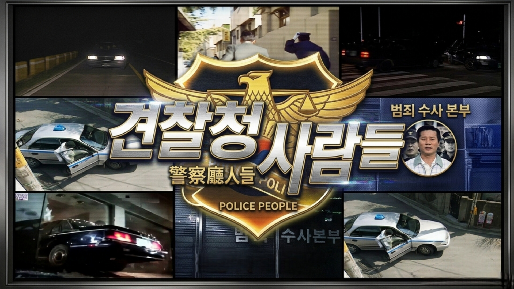
고백(告白)
주의: 해당 에피소드는 1998년에 제작된 것으로 현재와는 매우 많이 다릅니다.
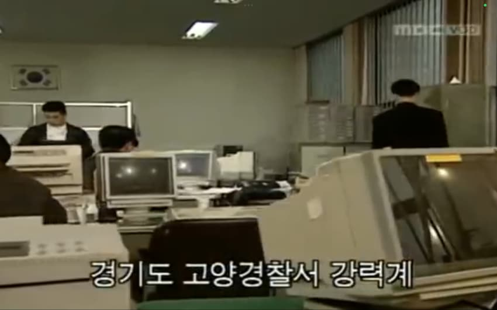
옛말에 "죄는 미워하되 사람은 미워하지 말라"는 말이 있다
하지만 경찰들은 범죄자들을 상대하다 보면 이 말을 종종 잊곤 한다
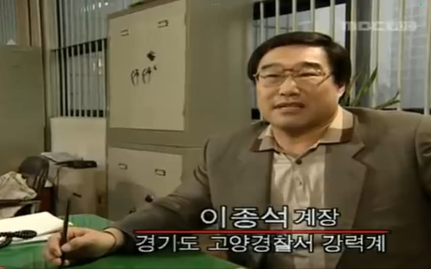
오늘의 이야기는 경기도 고양경찰서 강력계 이종석 계장에게
이 문장을 다시 떠올리게 해준 어느 강도강1간범의 이야기인데......
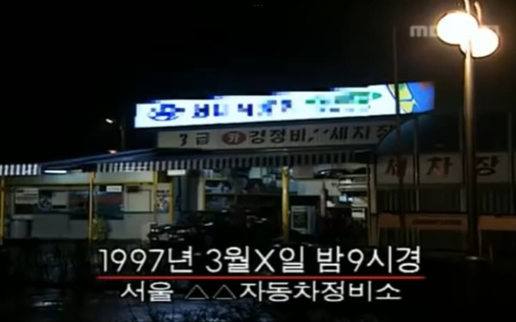
이곳은 정비가 한창인 자동차 정비소
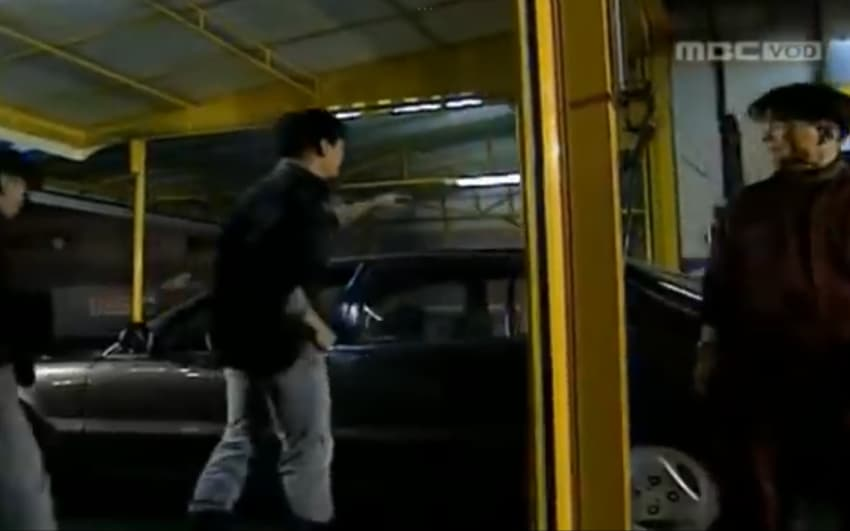
"야~ 차 졸라 좋아보이노"
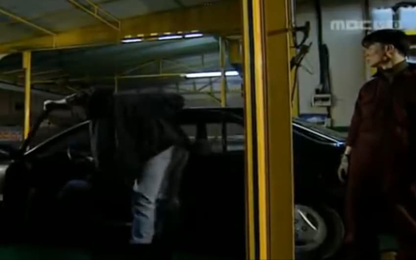
"야 타봐. 그랜다이저 개멋있지?"
"쏘나타야 이 차알못아"
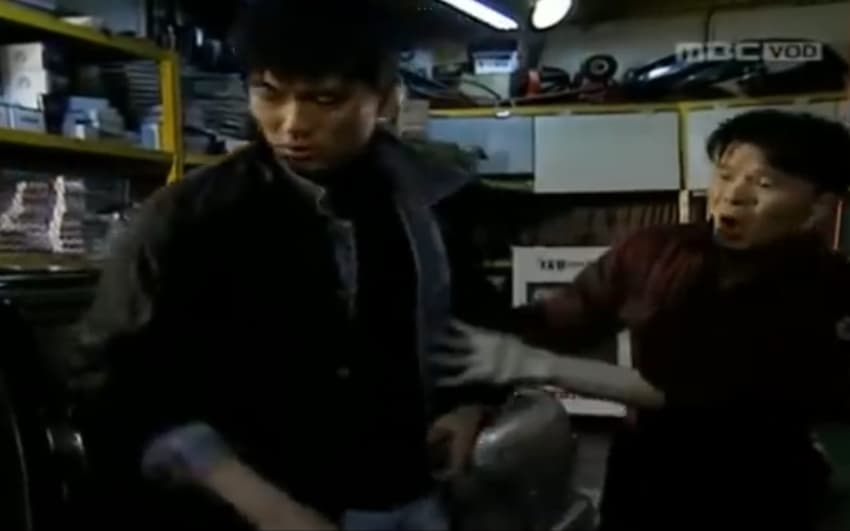
"아니 그건 손님차야... 이따가 정오에 출고해야 한다고"
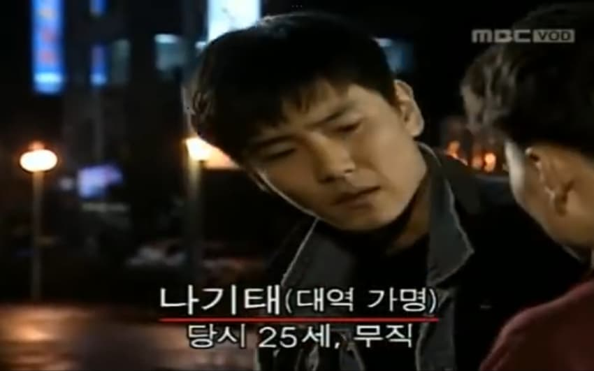
"야. 너 많이 컸다?"
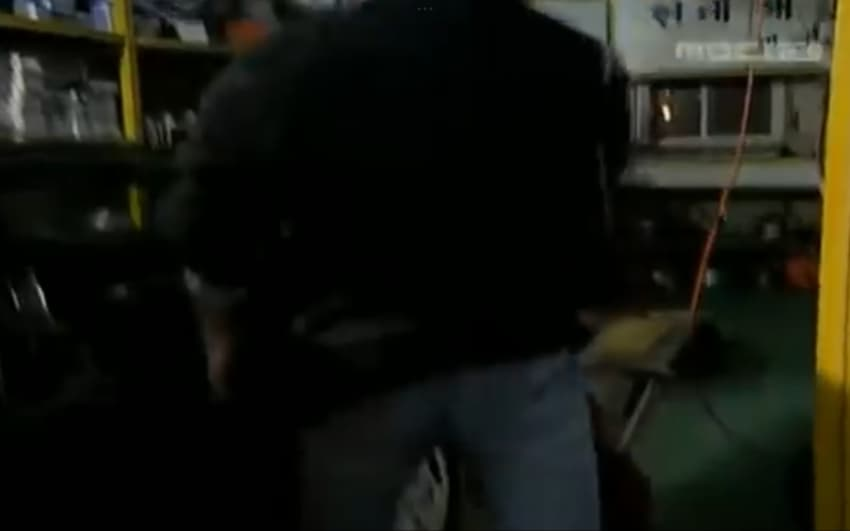
"그냥 차키 내놔 toRl야"
잠시후...
"그랜다이저 속도 100km 딱좋다ㅏㅏㅏㅏㅏㅏ"
"쏘나타 병신아;;;;"
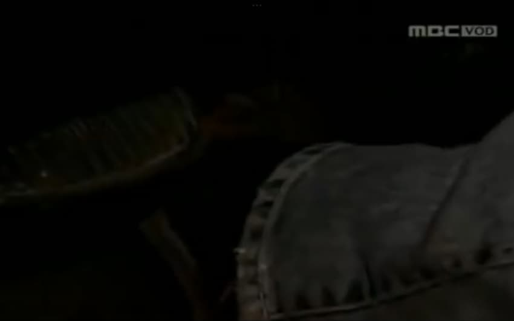
~폭주시작~
이야하하하하핰
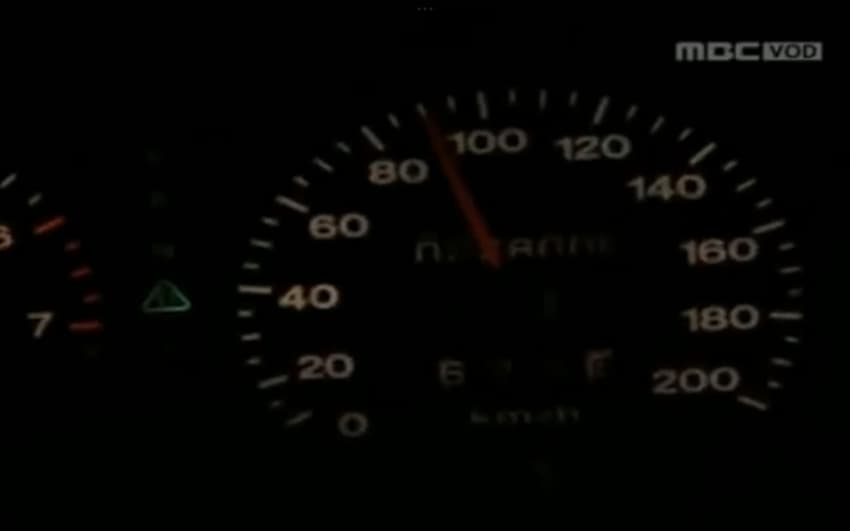
"어 뭐야 기름이 없잖아?"
돈없는데... 에라이 모르겠다
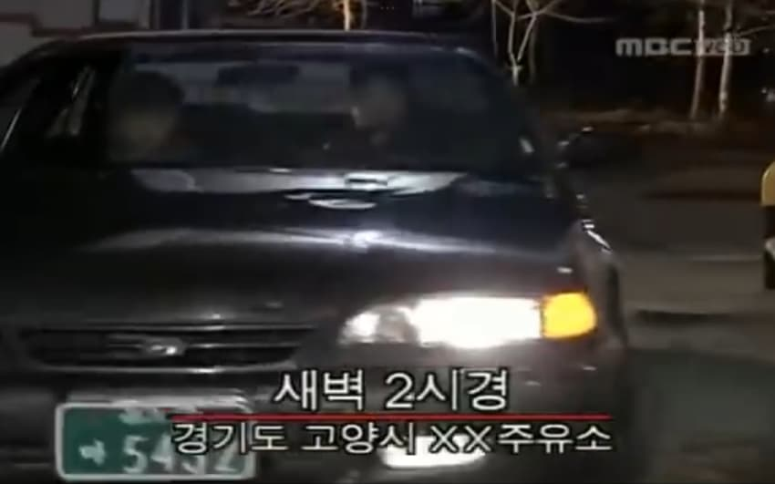
"어서옵쇼~"
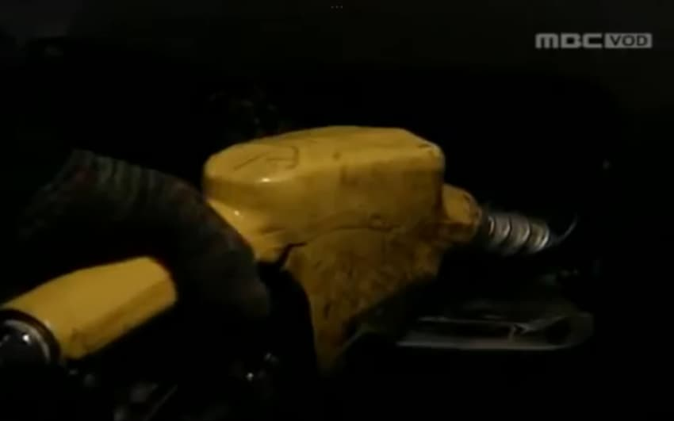
"계산 도와드리겠습니다~"
응 니엄마
거기서 미친놈들아!!!!!!!!
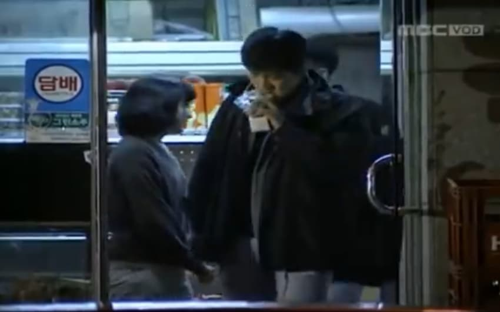
(1시간 후)
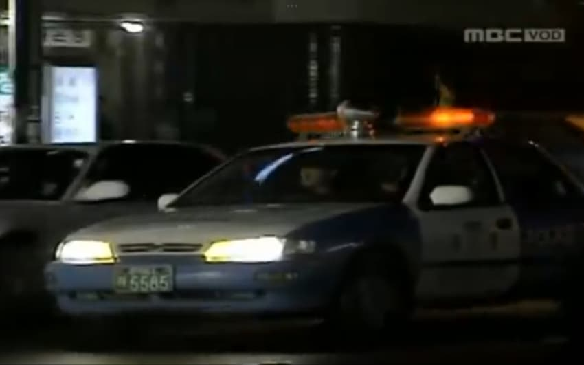
위용위용위용위용위용위용위용위용위용위용위용위용위용위용위용위용위용위용위용위용위용위용위용위용위용위용위용위용위용위용위용위용위용위용위용위용위용위용위용위용위용위용위용위용위용
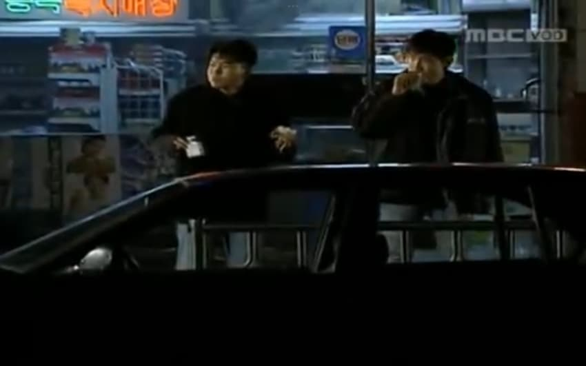
"뭐야 경찰놈?"
(바로 옆에 있는데 그냥감;;;;;)
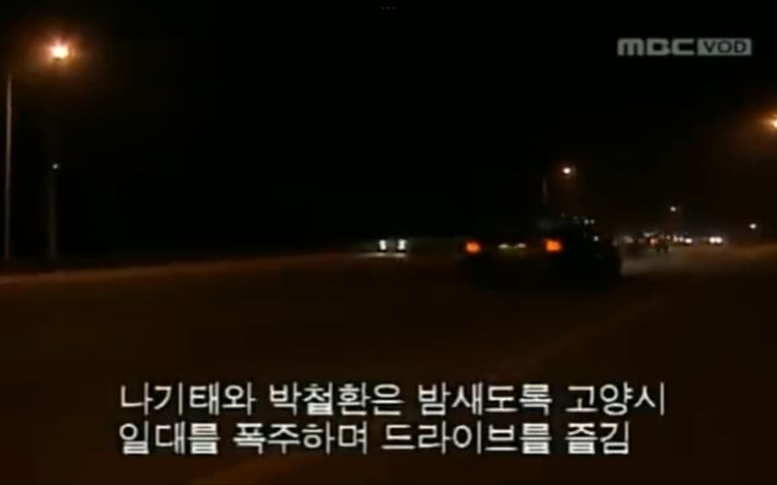
"야~~~ 기분 딱좋다!!!!"
"이런 기분일 때는 말이야... 여자 한명 ㄸ먹어야 돼"
하 니 미쳤나?
"당장하자."
목표물 포착
"어이 아가씨~"
끼아아아아아아아악!!!
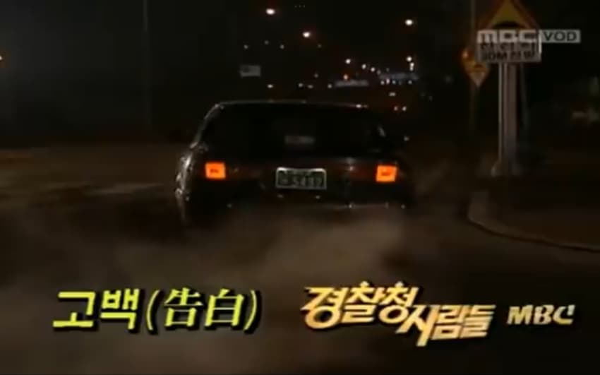
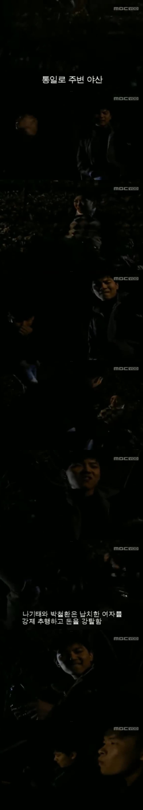
"에이씨..... 돈이 이거밖에 없노"
"이번엔 딱 안좋노"
"어.....?"
"니 왜그라노?"
계123속......
댓글
수집 당시 댓글 15개
프븨 · 11.07 16:49:27
앤드류그레이브스 · 11.07 17:56:12
땨뗘(봇) · 11.07 19:45:05
ㅇㅇ · 11.07 19:48:36
ㅇㅇ · 11.07 20:06:59
파래진다아아아 · 11.07 20:35:14
ㅇㅇ · 11.07 21:27:21
환란 전 교회 휴거 · 11.08 00:11:53
주소킹 · 11.08 01:18:29
ㅇㅇ · 11.08 05:00:00
ㅇㅇ · 11.08 05:00:03
ㅇㅇ · 11.08 09:22:57
ㅇㅇ · 11.08 12:04:01
JungNu · 11.08 14:00:19
ㅇㅇ · 11.08 17:38:31